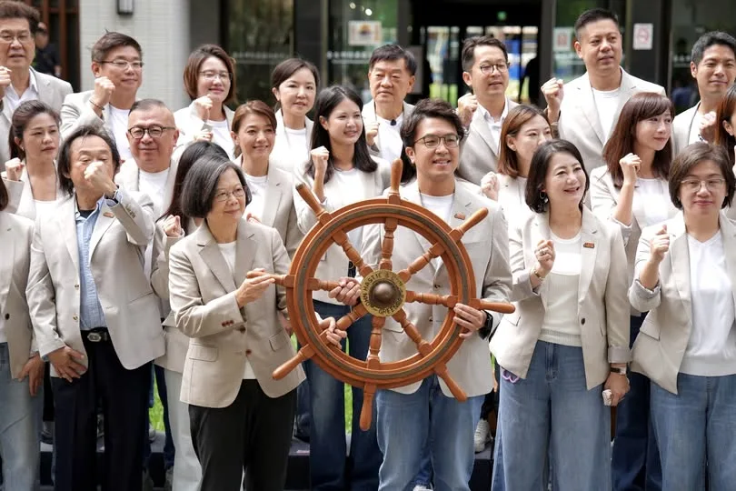

今天，我正式登記成為「台北市長候選人」。
⠀
常有人問我，想要把台北帶往哪裡？
⠀
首都，不一定要是最大的城市，
但一定要是最有方向、最能夠為台灣引路的城市。
這，才是台北該有的樣子。
⠀
台北擁有最多的資源與人才，
值得更長遠的規劃，
也值得擁有更大的夢想。
⠀
近四個月前，我宣佈參選台北市長。
當時我提出，
台北的市政不需要更多的 OK 繃，
而是需要一套長久運作的生態系，
以及十年、二十年的長遠規劃。
讓卡住的台北，真正順起來。
⠀
過去這段時間，
我提出交通、育兒、兒少保護、公共衛生及AI產業等不同政策。
⠀
因為市政府不能只在問題發生後補救，
而要提早看見市民的需要、做好準備。
⠀
我要成為問題的「解決者」，
更要成為台北未來的「開拓者」。
⠀
我要讓台北
⠀
生生有人護，餐餐都安心；
路路都平坦，處處有樹蔭；
人人能運動，月月有AI；
攤攤有生意，夜間有人顧；
我們要一個看得見的未來，
我們要一座持續發展的城市，
⠀
這才叫做「世界的台北」 。
⠀
今天我要告訴大家，台北做得到。
⠀
因為我來了。沈伯洋來了。
而且，我不是一個人來的。
⠀
蔡英文 Tsai Ing-wen 小英總統來了，站在我身旁；
台北隊來了，站在我身後；
你們也來了，就在我面前。
⠀⠀
⠀
今天登記，不只是把我的名字寫上去，
更是要把台北的未來，還給每位市民。
⠀
接下來的八十七天，
台北要選擇的是一種「治理方式」，
⠀
請選擇具有規劃未來、解決問題市長。
請選擇沈伯洋。
⠀
11月28日，支持沈伯洋。
讓台北順起來，航向新未來！